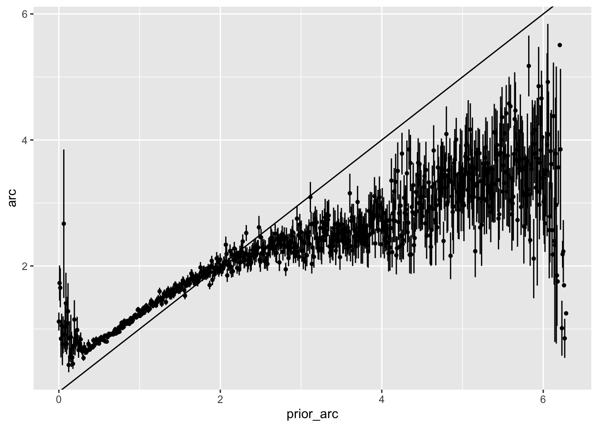
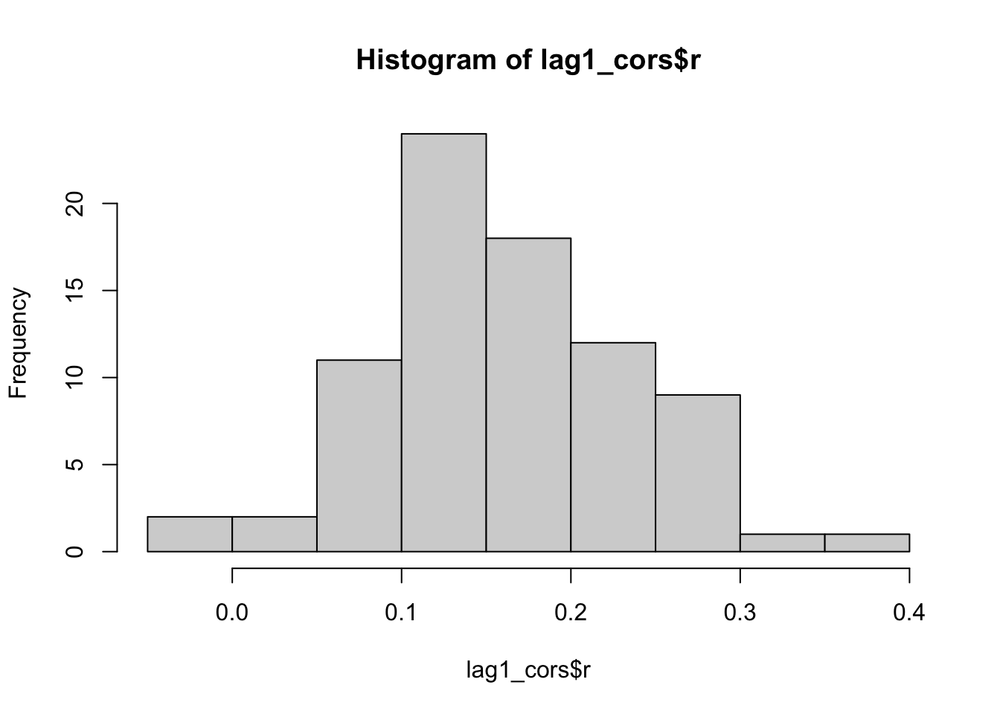
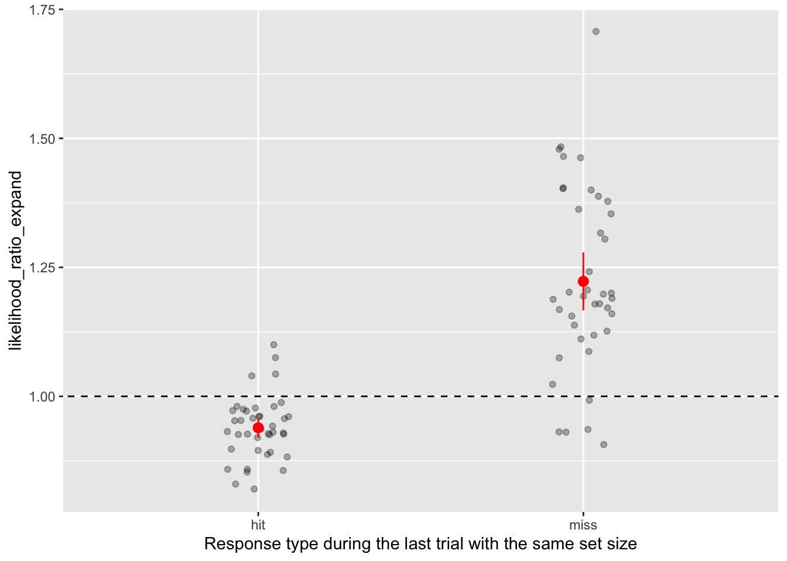

We saw that some reinforcement learning algorithms can find the optimal reward point. They do this by generally contracting the arc if the previous trial was a hit, and expanding it if it was a miss. Do we see this in the data? We know there are some sequential dependencies, although they are of a different kind.
We see that if the arc given on the previous trial is bigger, so is the arc on the current trial:
exp1<-read.csv("output/exp1_data.csv")dat<-exp1|>select(subject, experimentorder,blocknumber,trialnumber,setsize,resperr,arc,points)|>group_by(subject, experimentorder, blocknumber)|>mutate(prior_arc =shift_vector(arc, by =1), prior_resperr =shift_vector(resperr, by =1))dat|>ggplot(aes(prior_arc, arc))+stat_summary(size =0.1)+geom_abline(slope =1)

This might be because we are collapsing over participants - even if there is no sequential dependency within participants, the above plot might show one if participants have much different average arcs. We can standardize the arc responses within participants to account for this. For each arc we get its percentile rank such that 0 represents the smallest arc within participant, and 1 represents the highest. We see that there is still sequential dependencies, although a big part of it was accounted for due to between-subject variability.
The lag 1 correlation, computed within participants, has the following distribution:
lag1_cors<-dat|>group_by(subject, experimentorder)|>summarize(r =cor(arc, prior_arc, use ="pairwise.complete.obs"))hist(lag1_cors$r)

Contraction vs expansion
The above analyses do not tell us whether participants adapt their for the next trial depending on whether it currently contained the target or not. To see this, we want to measure the proportion of expanding vs contracting arcs conditional on whether the previous trial was a hit or not. For a single metric, we can calculate the likelihood ratio of expanding vs contracting conditional on hit or not
Each point is a single subject, and each subject has as point for hits and a point after misses. First, we see that the likelihood ratio is much more variable after a miss. This is partly due to the low level of misses overall. We see a tendency for contraction after hits (likelihood ratio < 1) and tendency for expansion after misses (likelihood ratio > 1). This is supported by one sample t-tests:
t.test(filter(smry1, resp_type=="hit")$likelihood_ratio_expand, mu =1, alternative ="less")
One Sample t-test
data: filter(smry1, resp_type == "hit")$likelihood_ratio_expand
t = -6.6297, df = 79, p-value = 1.89e-09
alternative hypothesis: true mean is less than 1
95 percent confidence interval:
-Inf 0.9466686
sample estimates:
mean of x
0.9287921
t.test(filter(smry1, resp_type=="miss")$likelihood_ratio_expand, mu =1, alternative ="greater")
One Sample t-test
data: filter(smry1, resp_type == "miss")$likelihood_ratio_expand
t = 7.6396, df = 79, p-value = 2.187e-11
alternative hypothesis: true mean is greater than 1
95 percent confidence interval:
1.451953 Inf
sample estimates:
mean of x
1.577842
The experiment uses an interleaved design where the set size varies on each trial. Since arc responses vary strongly with set-size, what we are interested in is how their response changes not only from the previous trial but from what it would have been given the set size that they see. We can check if we compare the change direction with the previous time they encountered the same set size, depending on that previous time was a hit or miss. There can be any number of intervening trials and we only care about the last time that the same setsize occurred. We get a similar dependency:
smry2<-exp1|>filter(exp_type=="SetS")|>select(subject, experimentorder, setsize, arc, resperr, points)|>group_by(subject, experimentorder, setsize)|>mutate( prior_setsize_arc =shift_vector(arc, by =1), prior_setsize_resperr =shift_vector(resperr, by =1), resp_type =if_else(prior_setsize_arc>=2*abs(prior_setsize_resperr), "hit", "miss"), change_type =if_else(arc>prior_setsize_arc, "expanding", "contracting"))|>ungroup()|>count(subject, experimentorder, resp_type, change_type)|>filter(!is.na(change_type))|>complete(subject, resp_type, change_type, fill =list(n =0))|>group_by(subject, experimentorder)|>mutate(p =n/sum(n))smry2<-smry2|>select(-n)|>spread(change_type, p)|>mutate(likelihood_ratio_expand =expanding/contracting)smry2|>ggplot(aes(resp_type, likelihood_ratio_expand))+geom_point(position =position_jitter(0.1), alpha =0.3)+stat_summary(fun.data = \(x)mean_se(x, mult =2), color ="red")+xlab("Response type during the last trial with the same set size")+geom_abline(intercept =1, slope =0, linetype ="dashed")

t.test(filter(smry2, resp_type=="hit")$likelihood_ratio_expand, mu =1, alternative ="less")
One Sample t-test
data: filter(smry2, resp_type == "hit")$likelihood_ratio_expand
t = -6.3314, df = 39, p-value = 8.976e-08
alternative hypothesis: true mean is less than 1
95 percent confidence interval:
-Inf 0.955214
sample estimates:
mean of x
0.9389742
t.test(filter(smry2, resp_type=="miss")$likelihood_ratio_expand, mu =1, alternative ="greater")
One Sample t-test
data: filter(smry2, resp_type == "miss")$likelihood_ratio_expand
t = 7.9252, df = 39, p-value = 5.957e-10
alternative hypothesis: true mean is greater than 1
95 percent confidence interval:
1.175497 Inf
sample estimates:
mean of x
1.222881
The graph and stats look like before but they tell us something different - people remember what arc they gave the previous time they encountered a given setsize and whether they hit or missed. When they encounter the same setsize condition, they tend to expand their arc relative to the one they gave to the previous trial of the same set size, not just the immediately previous trial, specifically if they missed last time with that set size.
So from the two analyses combined we know that people adapt their arc (expand or contract) based on at least two sources of information - the immediately preceding trial, and the last trial that had the same setsize condition.
Contraction vs expansion in Honig et al’s data
We can do the same analysis for Honig et al’s (2020) data, where each of 12 participants did four sessions. There is no setsize manipulation (always 4), and each session is blocked with identical (with respect to any task parameters) trials.
t.test(filter(smry1_honig, resp_type=="hit")$likelihood_ratio_expand, mu =1, alternative ="less")
One Sample t-test
data: filter(smry1_honig, resp_type == "hit")$likelihood_ratio_expand
t = -4.8408, df = 47, p-value = 7.19e-06
alternative hypothesis: true mean is less than 1
95 percent confidence interval:
-Inf 0.9538594
sample estimates:
mean of x
0.9293816
t.test(filter(smry1_honig, resp_type=="miss")$likelihood_ratio_expand, mu =1, alternative ="greater")
One Sample t-test
data: filter(smry1_honig, resp_type == "miss")$likelihood_ratio_expand
t = 4.8846, df = 47, p-value = 6.206e-06
alternative hypothesis: true mean is greater than 1
95 percent confidence interval:
1.22337 Inf
sample estimates:
mean of x
1.340249